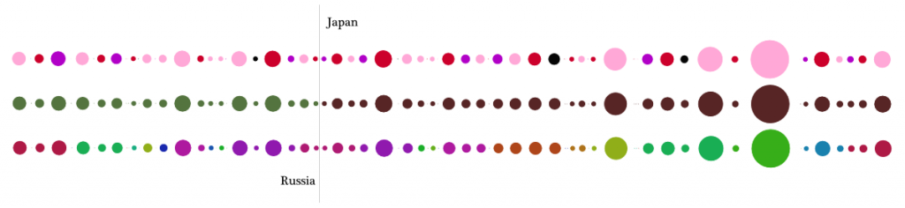

In September, I’ll begin supporting Walter Scheidel in an attempt to help better understand Imperial Roman transportation costs and networks. It’s quite different from the work I’ve been doing these last few months with Ursula Heise–attempting to understand the database as a form of world environmental literature–structurally, but especially methodologically. GIS, and spatial humanities scholarship in general, have well-established methods for visual display of information. A good map of the flow of goods and people from Rome to Hippo is easier to envision than a good representation of the thematic elements of the Euastacus Neodiversus entry in the IUCN Red List. I am consistently reminded to add legends, for instance, to my maps of attention like the one on display in an earlier post. But after working so much with raw data of all sorts, I’ve grown wary of the scientistic veneer that exacting and well-known features of information display bring with them.


It’s also my feeling that a visual display of information need not spoon-feed a description of every visual element, especially if it is tied to a sophisticated scholarly argument. Perhaps, if we were trying to sell database aesthetics to Congress, then this would be the case. But an astute reader should notice that the classes above are mirrored, and be able to draw conclusions from the patterns beyond a general understanding that Russia has less endangered species entries than Japan.

Visual representation of knowledge, like narrative representation of knowledge, should not always be simple and focused on accessibility.